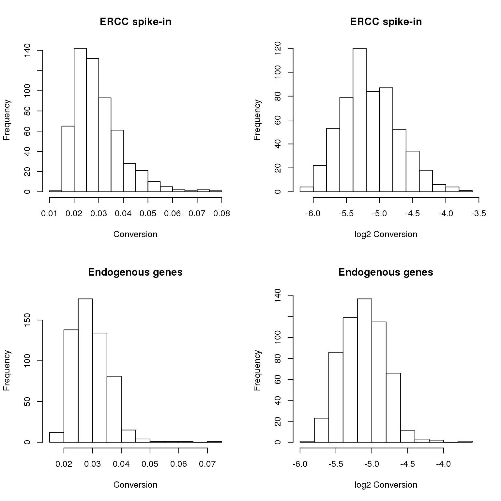
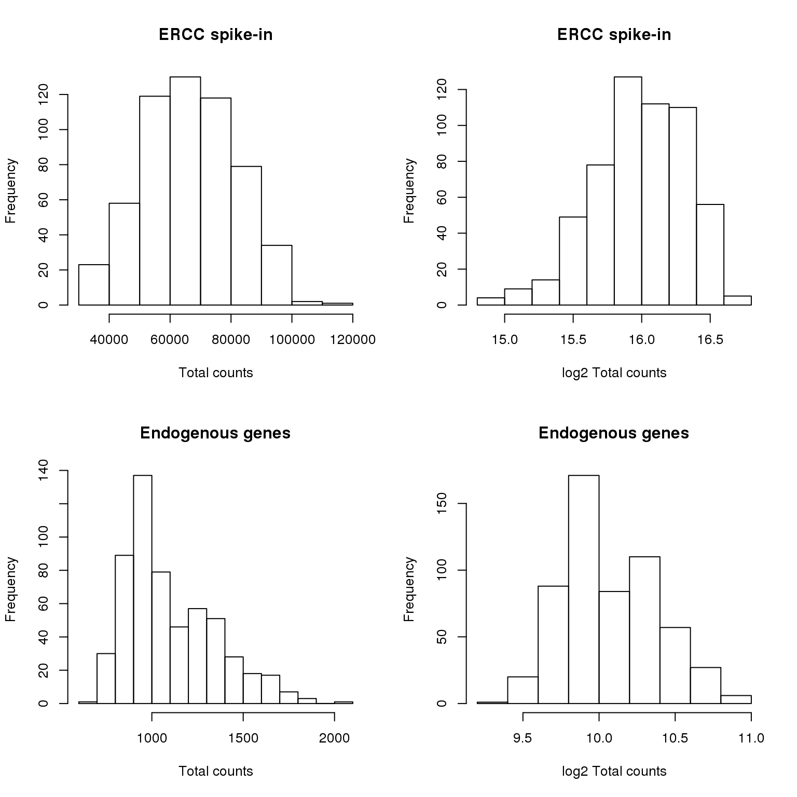
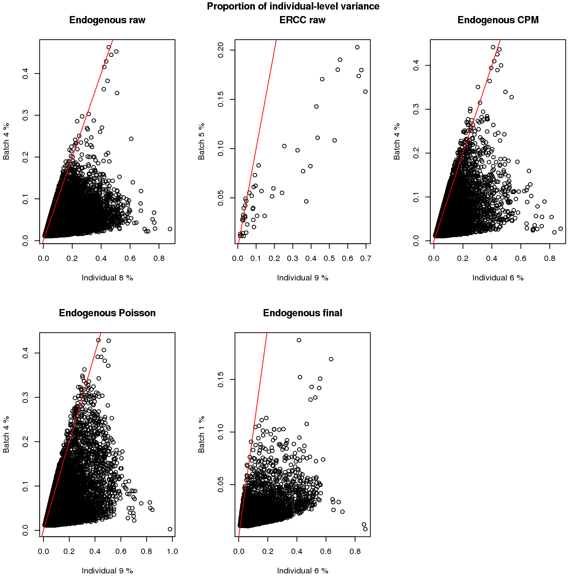
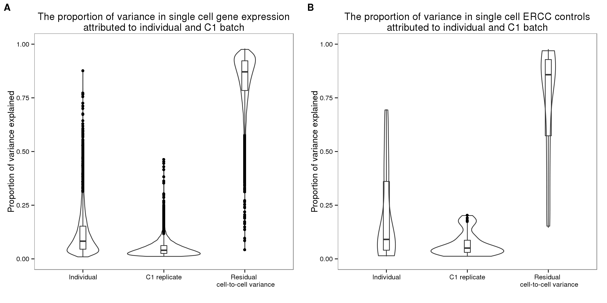
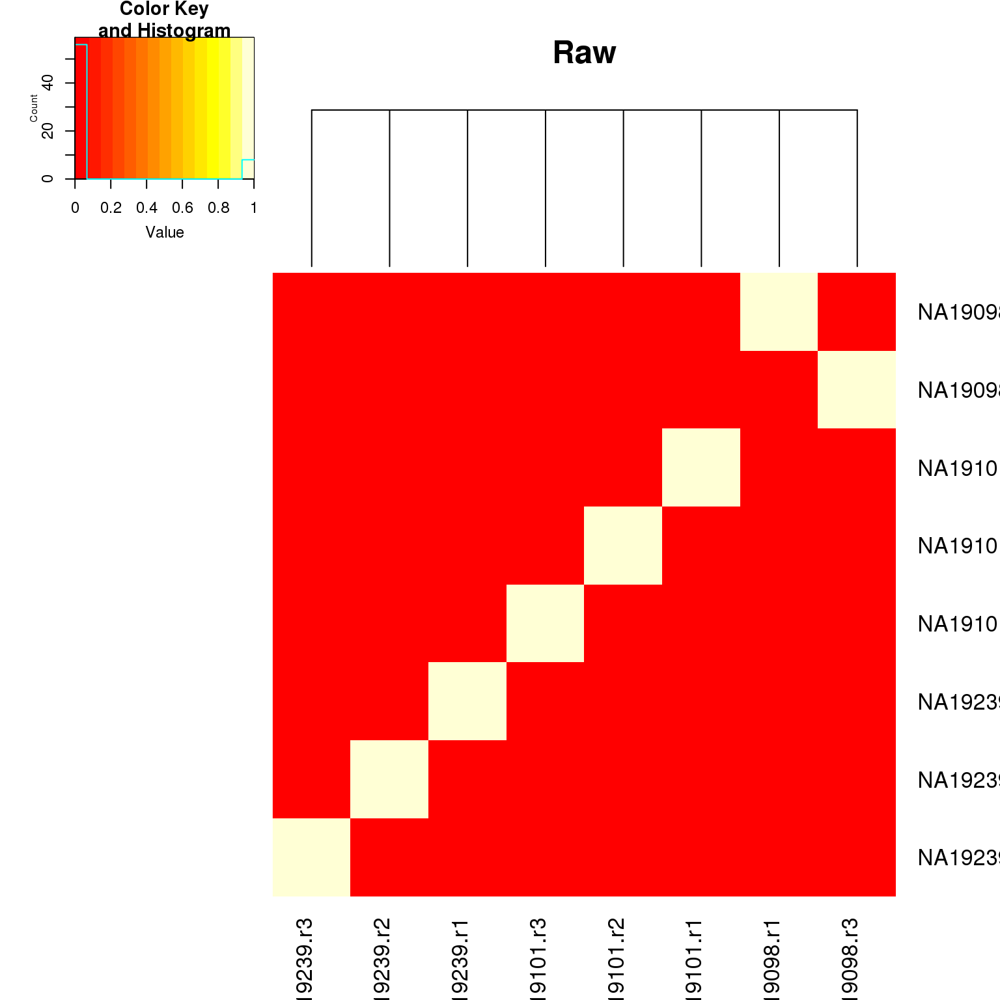

Additional analysis for the manuscript
2016-06-23
Last updated: 2016-06-29
Code version: c59e3a495e7257caa3180d1dfdaf315cdd79d715
library("dplyr")
library("ggplot2")
library("cowplot")
library("lmtest")
library("lme4")
source("functions.R")Questions
- Concentration vs. total molecule-count (ENSG)
(Our study design allows us to investigate…)
total molecule-count ~ Concentration
- Molecule-to-read conversion rate (ENSG, ERCC)
(We explored…)
total molecule-count ~ read
- total ERCC molecule-count and total ENSG molecule-count
(Could we account…)
total ENSG molecule-count ~ total ERCC molecule-count
- Percent variation explained by individual and replicate effect in ENSG and ERCC
(As a first step…)
Input
Input filtered annotation.
anno_filter <- read.table("../data/annotation-filter.txt", header = TRUE,
stringsAsFactors = FALSE)
head(anno_filter) individual replicate well batch sample_id
1 NA19098 r1 A01 NA19098.r1 NA19098.r1.A01
2 NA19098 r1 A02 NA19098.r1 NA19098.r1.A02
3 NA19098 r1 A04 NA19098.r1 NA19098.r1.A04
4 NA19098 r1 A05 NA19098.r1 NA19098.r1.A05
5 NA19098 r1 A06 NA19098.r1 NA19098.r1.A06
6 NA19098 r1 A07 NA19098.r1 NA19098.r1.A07Input filtered molecule counts.
molecules_filter <- read.table("../data/molecules-filter.txt", header = TRUE,
stringsAsFactors = FALSE)
molecules_filter_ENSG <- molecules_filter[grep("ERCC", rownames(molecules_filter), invert = TRUE), ]
molecules_filter_ERCC <- molecules_filter[grep("ERCC", rownames(molecules_filter), invert = FALSE), ]
stopifnot(ncol(molecules_filter) == nrow(anno_filter),
colnames(molecules_filter) == anno_filter$sample_id)Input filtered read counts
reads_filter <- read.table("../data/reads-filter.txt", header = TRUE,
stringsAsFactors = FALSE)
reads_filter_ENSG <- reads_filter[grep("ERCC", rownames(reads_filter), invert = TRUE), ]
stopifnot(all.equal(colnames(reads_filter_ENSG),
colnames(molecules_filter_ENSG)))Input quality control file. Filter cells to match cells in molecules_filter.
qc <- read.table("../data/qc-ipsc.txt", header = TRUE,
stringsAsFactors = FALSE)
qc$sample_id <- with(qc, paste0(individual, ".", replicate, ".", well))
qc_filter <- qc[match(anno_filter$sample_id, qc$sample_id), ]
stopifnot(all.equal(qc_filter$sample_id, anno_filter$sample_id))Input standardized molecule counts.
molecules_cpm <- read.table("../data/molecules-cpm.txt", header = TRUE,
stringsAsFactors = FALSE)
stopifnot(ncol(molecules_cpm) == nrow(anno_filter),
colnames(molecules_cpm) == anno_filter$sample_id)Input Poisson GLM transformed molecule counts per million.
molecules_cpm_trans <- read.table("../data/molecules-cpm-trans.txt", header = TRUE,
stringsAsFactors = FALSE)
stopifnot(ncol(molecules_cpm_trans) == nrow(anno_filter),
colnames(molecules_cpm_trans) == anno_filter$sample_id)Input final batch-corrected molecule counts per million.
molecules_final <- read.table("../data/molecules-final.txt", header = TRUE,
stringsAsFactors = FALSE)
stopifnot(ncol(molecules_final) == nrow(anno_filter),
colnames(molecules_final) == anno_filter$sample_id)Concentration vs. total molecule-count (ENSG)
As we try to understand the general relationships between sequencing results and cellular mRNA content, we remove outlier batches. NA19098 replicate 1 failed the quantification of the concentration of the single cells and was hence removed. Because NA19098 concentration is only quantified in one replicate, we removed NA19098 from analysis involving batch differences and concentration.
anno_single <- anno_filter
ercc_index <- grepl("ERCC", rownames(molecules_filter))
anno_single$total_molecules_gene = colSums(molecules_filter[!ercc_index, ])
anno_single$total_molecules_ercc = colSums(molecules_filter[ercc_index, ])
anno_single$total_molecules = colSums(molecules_filter)
anno_single$num_genes = apply(molecules_filter[!ercc_index, ], 2, function(x) sum(x > 0))
anno_single$concentration <- qc_filter$concentration[match(anno_single$sample_id, qc_filter$sample_id)]
anno_single <- anno_single %>% filter(individual != "NA19098")
anno_single$individual <- as.factor(anno_single$individual)
anno_single$replicate <- as.factor(anno_single$replicate)Correlation between total molecule-count and concentration.
with(anno_single,
cor.test(total_molecules_gene /(10^3), concentration,
method = "spearman"))Warning in cor.test.default(total_molecules_gene/(10^3), concentration, :
Cannot compute exact p-value with ties
Spearman's rank correlation rho
data: total_molecules_gene/(10^3) and concentration
S = 7385800, p-value < 2.2e-16
alternative hypothesis: true rho is not equal to 0
sample estimates:
rho
0.4103248 with(anno_single[anno_single$individual == "NA19101",],
cor.test(total_molecules_gene /(10^3), concentration,
method = "spearman"))Warning in cor.test.default(total_molecules_gene/(10^3), concentration, :
Cannot compute exact p-value with ties
Spearman's rank correlation rho
data: total_molecules_gene/(10^3) and concentration
S = 912310, p-value = 2.342e-06
alternative hypothesis: true rho is not equal to 0
sample estimates:
rho
0.3259157 with(anno_single[anno_single$individual == "NA19239",],
cor.test(total_molecules_gene /(10^3), concentration,
method = "spearman"))Warning in cor.test.default(total_molecules_gene/(10^3), concentration, :
Cannot compute exact p-value with ties
Spearman's rank correlation rho
data: total_molecules_gene/(10^3) and concentration
S = 903010, p-value = 2.964e-15
alternative hypothesis: true rho is not equal to 0
sample estimates:
rho
0.4980306 # per replicate
sapply(unique(anno_single$batch), function(batch) {
with(anno_single[anno_single$batch == batch,],
cor(total_molecules_gene /(10^3), concentration,
method = "spearman"))
}) NA19101.r1 NA19101.r2 NA19101.r3 NA19239.r1 NA19239.r2 NA19239.r3
0.36385586 0.52144169 -0.01728507 0.77089967 0.77088980 -0.04157741 We take total molecule-count divided by 1000.
fit <- lmer(total_molecules_gene /(10^3)~ concentration + individual +
(1|individual:replicate),
data = anno_single)
summary(fit)Linear mixed model fit by REML ['lmerMod']
Formula: total_molecules_gene/(10^3) ~ concentration + individual + (1 |
individual:replicate)
Data: anno_single
REML criterion at convergence: 3263.5
Scaled residuals:
Min 1Q Median 3Q Max
-2.4154 -0.7006 -0.1026 0.6488 3.9472
Random effects:
Groups Name Variance Std.Dev.
individual:replicate (Intercept) 8.8 2.967
Residual 134.2 11.583
Number of obs: 422, groups: individual:replicate, 6
Fixed effects:
Estimate Std. Error t value
(Intercept) 35.419 3.278 10.805
concentration 12.860 1.468 8.762
individualNA19239 7.680 2.677 2.869
Correlation of Fixed Effects:
(Intr) cncntr
concentratn -0.814
indvNA19239 -0.392 -0.025fit_1 <- lm(total_molecules_gene /(10^3) ~ concentration + individual,
data = anno_single)
fit_2 <- lmer(total_molecules_gene /(10^3) ~ concentration +
(1|individual:replicate), data = anno_single)
# significance of individual effect
lrtest(fit_2, fit)Likelihood ratio test
Model 1: total_molecules_gene/(10^3) ~ concentration + (1 | individual:replicate)
Model 2: total_molecules_gene/(10^3) ~ concentration + individual + (1 |
individual:replicate)
#Df LogLik Df Chisq Pr(>Chisq)
1 4 -1636.4
2 5 -1631.7 1 9.2709 0.002328 **
---
Signif. codes: 0 '***' 0.001 '**' 0.01 '*' 0.05 '.' 0.1 ' ' 1# significance of replicate effect
anova(fit, fit_1)refitting model(s) with ML (instead of REML)Data: anno_single
Models:
fit_1: total_molecules_gene/(10^3) ~ concentration + individual
fit: total_molecules_gene/(10^3) ~ concentration + individual + (1 |
fit: individual:replicate)
Df AIC BIC logLik deviance Chisq Chi Df Pr(>Chisq)
fit_1 4 3288.1 3304.3 -1640.1 3280.1
fit 5 3281.8 3302.1 -1635.9 3271.8 8.2633 1 0.004045 **
---
Signif. codes: 0 '***' 0.001 '**' 0.01 '*' 0.05 '.' 0.1 ' ' 1Reads to molecule conversion efficiency
Prepare ERCC data
reads_ERCC <- reads_filter[grep("ERCC", rownames(reads_filter),
invert = FALSE), ]
molecules_ERCC <- molecules_filter[grep("ERCC", rownames(molecules_filter),
invert = FALSE), ]
total_counts_ERCC <- data.frame(total_reads = colSums(reads_ERCC),
total_molecules = colSums(molecules_ERCC))
total_counts_ERCC$conversion <- with(total_counts_ERCC,
total_molecules/total_reads)
total_counts_ERCC$individual <- as.factor(anno_filter$individual[match(rownames(total_counts_ERCC),
anno_filter$sample_id)])
total_counts_ERCC$replicate <- as.factor(anno_filter$replicate[match(rownames(total_counts_ERCC),
anno_filter$sample_id)])Prepare ENSG data
reads_ENSG <- reads_filter[grep("ERCC", rownames(reads_filter),
invert = TRUE), ]
molecules_ENSG <- molecules_filter[grep("ERCC", rownames(molecules_filter),
invert = TRUE), ]
total_counts_ENSG <- data.frame(total_reads = colSums(reads_ENSG),
total_molecules = colSums(molecules_ENSG))
total_counts_ENSG$conversion <- with(total_counts_ENSG,
total_molecules/total_reads)
total_counts_ENSG$individual <- as.factor(anno_filter$individual[match(rownames(total_counts_ENSG),
anno_filter$sample_id)])
total_counts_ENSG$replicate <- as.factor(anno_filter$replicate[match(rownames(total_counts_ENSG),
anno_filter$sample_id)])Concentration distribution is skewed for both ERCC and ENSG genes. Hence, we analyze the log2 conversion data (log2 base was taken so that our log transformation base is consistent throughout the paper).
par(mfrow = c(2,2))
hist(total_counts_ERCC$conversion,
main = "ERCC spike-in",
xlab = "Conversion")
hist(log2(total_counts_ERCC$conversion),
main = "ERCC spike-in",
xlab = "log2 Conversion")
hist(total_counts_ENSG$conversion,
main = "Endogenous genes",
xlab = "Conversion")
hist(log2(total_counts_ENSG$conversion),
main = "Endogenous genes",
xlab = "log2 Conversion")
ERCC Model fitting
fit <- lmer(log2(conversion) ~ individual +
(1|individual:replicate),
data = total_counts_ERCC)
fit_1 <- lm(log2(conversion) ~ individual,
data = total_counts_ERCC)
fit_2 <- lmer(log2(conversion) ~ 1 +
(1|individual:replicate),
data = total_counts_ERCC)
# significance of individual effect
lrtest(fit_2, fit)Likelihood ratio test
Model 1: log2(conversion) ~ 1 + (1 | individual:replicate)
Model 2: log2(conversion) ~ individual + (1 | individual:replicate)
#Df LogLik Df Chisq Pr(>Chisq)
1 3 -217.72
2 5 -212.09 2 11.263 0.003584 **
---
Signif. codes: 0 '***' 0.001 '**' 0.01 '*' 0.05 '.' 0.1 ' ' 1# significance of replicate effect
anova(fit, fit_1)refitting model(s) with ML (instead of REML)Data: total_counts_ERCC
Models:
fit_1: log2(conversion) ~ individual
fit: log2(conversion) ~ individual + (1 | individual:replicate)
Df AIC BIC logLik deviance Chisq Chi Df Pr(>Chisq)
fit_1 4 425.46 442.80 -208.73 417.46
fit 5 421.41 443.08 -205.70 411.41 6.052 1 0.01389 *
---
Signif. codes: 0 '***' 0.001 '**' 0.01 '*' 0.05 '.' 0.1 ' ' 1ENSG Model fitting
fit <- lmer(log2(conversion) ~ individual +
(1|individual:replicate),
data = total_counts_ENSG)
fit_1 <- lm(log2(conversion) ~ individual,
data = total_counts_ENSG)
fit_2 <- lmer(log2(conversion) ~ 1 +
(1|individual:replicate),
data = total_counts_ENSG)
# significance of individual effect
lrtest(fit_2, fit)Likelihood ratio test
Model 1: log2(conversion) ~ 1 + (1 | individual:replicate)
Model 2: log2(conversion) ~ individual + (1 | individual:replicate)
#Df LogLik Df Chisq Pr(>Chisq)
1 3 127.45
2 5 132.70 2 10.508 0.005226 **
---
Signif. codes: 0 '***' 0.001 '**' 0.01 '*' 0.05 '.' 0.1 ' ' 1# significance of replicate effect
anova(fit, fit_1)refitting model(s) with ML (instead of REML)Data: total_counts_ENSG
Models:
fit_1: log2(conversion) ~ individual
fit: log2(conversion) ~ individual + (1 | individual:replicate)
Df AIC BIC logLik deviance Chisq Chi Df Pr(>Chisq)
fit_1 4 -231.46 -214.12 119.73 -239.46
fit 5 -268.48 -246.81 139.24 -278.48 39.026 1 4.182e-10 ***
---
Signif. codes: 0 '***' 0.001 '**' 0.01 '*' 0.05 '.' 0.1 ' ' 1total ENSG molecule-count and total ERCC molecule-count
Prepare data
anno_temp <- anno_filter
anno_temp$ensg_total_count <-
colSums(molecules_filter[grep("ERCC",
rownames(molecules_filter), invert = FALSE), ])
anno_temp$ercc_total_count <-
colSums(molecules_filter[grep("ERCC",
rownames(molecules_filter), invert = TRUE), ])Check if total count ERCC is normal distribution
par(mfrow = c(2,2))
hist(anno_temp$ercc_total_count,
main = "ERCC spike-in",
xlab = "Total counts")
hist(log2(anno_temp$ercc_total_count),
main = "ERCC spike-in",
xlab = "log2 Total counts")
hist(anno_temp$ensg_total_count,
main = "Endogenous genes",
xlab = "Total counts")
hist(log2(anno_temp$ensg_total_count),
main = "Endogenous genes",
xlab = "log2 Total counts")
First, we assess total ERCC molecule-count beteween individuals and replicates.
fit <- lmer(log2(ercc_total_count) ~ individual +
(1|individual:replicate),
data = anno_temp)
fit_1 <- lm(log2(ercc_total_count) ~ individual,
data = anno_temp)
fit_2 <- lmer(log2(ercc_total_count) ~ 1 +
(1|individual:replicate),
data = anno_temp)
# significance of individual effect
lrtest(fit_2, fit)Likelihood ratio test
Model 1: log2(ercc_total_count) ~ 1 + (1 | individual:replicate)
Model 2: log2(ercc_total_count) ~ individual + (1 | individual:replicate)
#Df LogLik Df Chisq Pr(>Chisq)
1 3 -138.78
2 5 -136.23 2 5.1014 0.07803 .
---
Signif. codes: 0 '***' 0.001 '**' 0.01 '*' 0.05 '.' 0.1 ' ' 1# significance of replicate effect
anova(fit, fit_1)refitting model(s) with ML (instead of REML)Data: anno_temp
Models:
fit_1: log2(ercc_total_count) ~ individual
fit: log2(ercc_total_count) ~ individual + (1 | individual:replicate)
Df AIC BIC logLik deviance Chisq Chi Df Pr(>Chisq)
fit_1 4 281.21 298.55 -136.60 273.21
fit 5 270.03 291.70 -130.01 260.03 13.181 1 0.0002828 ***
---
Signif. codes: 0 '***' 0.001 '**' 0.01 '*' 0.05 '.' 0.1 ' ' 1Second, we perform the same analysis on total ENSG molecule-counts.
fit <- lmer(log2(ensg_total_count) ~ individual +
(1|individual:replicate),
data = anno_temp)
fit_1 <- lm(log2(ensg_total_count) ~ individual,
data = anno_temp)
fit_2 <- lmer(log2(ensg_total_count) ~ 1 +
(1|individual:replicate),
data = anno_temp)
# significance of individual effect
lrtest(fit_2, fit)Likelihood ratio test
Model 1: log2(ensg_total_count) ~ 1 + (1 | individual:replicate)
Model 2: log2(ensg_total_count) ~ individual + (1 | individual:replicate)
#Df LogLik Df Chisq Pr(>Chisq)
1 3 254.98
2 5 256.73 2 3.5097 0.1729# significance of replicate effect
anova(fit, fit_1)refitting model(s) with ML (instead of REML)Data: anno_temp
Models:
fit_1: log2(ensg_total_count) ~ individual
fit: log2(ensg_total_count) ~ individual + (1 | individual:replicate)
Df AIC BIC logLik deviance Chisq Chi Df Pr(>Chisq)
fit_1 4 -86.97 -69.63 47.485 -94.97
fit 5 -510.93 -489.25 260.463 -520.93 425.96 1 < 2.2e-16 ***
---
Signif. codes: 0 '***' 0.001 '**' 0.01 '*' 0.05 '.' 0.1 ' ' 1Second, we include total ENSG molecule-count in the model of total ERCC molecule-count in addition to individual and replicate factors.
ERCC ~ ENSG
fit <- lmer(log2(ercc_total_count) ~ log2(ensg_total_count) + individual +
(1|individual:replicate),
data = anno_temp)
fit_1 <- lm(log2(ercc_total_count) ~ log2(ensg_total_count) + individual,
data = anno_temp)
fit_2 <- lmer(log2(ercc_total_count) ~ log2(ensg_total_count) +
(1|individual:replicate),
data = anno_temp)
# significance of individual effect
lrtest(fit_2, fit)Likelihood ratio test
Model 1: log2(ercc_total_count) ~ log2(ensg_total_count) + (1 | individual:replicate)
Model 2: log2(ercc_total_count) ~ log2(ensg_total_count) + individual +
(1 | individual:replicate)
#Df LogLik Df Chisq Pr(>Chisq)
1 4 -66.621
2 6 -66.770 2 0.2977 0.8617# significance of replicate effect
anova(fit, fit_1)refitting model(s) with ML (instead of REML)Data: anno_temp
Models:
fit_1: log2(ercc_total_count) ~ log2(ensg_total_count) + individual
fit: log2(ercc_total_count) ~ log2(ensg_total_count) + individual +
fit: (1 | individual:replicate)
Df AIC BIC logLik deviance Chisq Chi Df Pr(>Chisq)
fit_1 5 224.79 246.46 -107.39 214.79
fit 6 134.98 160.99 -61.49 122.98 91.806 1 < 2.2e-16 ***
---
Signif. codes: 0 '***' 0.001 '**' 0.01 '*' 0.05 '.' 0.1 ' ' 1Variance components per gene
Load model fitting code - a wrapper of the blmer function that fits a bayesian nested model for one gene at a time.
#' Per gene variance component model
#'
#' @param xx Matrix of expression measurements on log scale.
#' @param annotation Meta-data matrix of each column of xx.
gene_variation <- function(counts, annotation) {
individual <- as.factor(annotation$individual)
replicate <- as.factor(annotation$replicate)
## fit bayesian GLM one gene at a time
blme_fit <- lapply( 1:NROW(counts), function(i) {
value <- unlist(counts[i,])
fit_try <- tryCatch(
fit <- blme::blmer(value ~ 1|individual/replicate,
cov.prior = gamma(shape = 2),
resid.prior = gamma(shape = 2)),
condition = function(c) c)
if(inherits(fit_try, "condition")){
var_foo <- rep(NA, 3)
return(var_foo)
}
if(!inherits(fit_try, "condition")){
var_foo <- as.data.frame(VarCorr(fit_try))[,4]
var_foo <- var_foo[c(2,1,3)]
var_foo
}
})
blme_fit <- do.call(rbind, blme_fit)
rownames(blme_fit) <- rownames(counts)
colnames(blme_fit) <- c("individual","replicate","residual")
blme_fit
}individual <- as.factor(anno_filter$individual)
replicate <- as.factor(anno_filter$replicate)
## endogenous molecule-count
blme_raw <- gene_variation(counts = log2(molecules_filter_ENSG+1),
annotation = anno_filter)
## ERCC molecule-count
blme_ercc <- gene_variation(counts = log2(molecules_filter_ERCC+1),
annotation = anno_filter)
## ENSG CPM
blme_cpm <- gene_variation(counts = molecules_cpm,
annotation = anno_filter)
## ENSG CPM Poisson
blme_cpm_trans <- gene_variation(counts = molecules_cpm_trans,
annotation = anno_filter)
## ENSG CPM Poisson
blme_final <- gene_variation(counts = molecules_final,
annotation = anno_filter)
save(blme_raw, blme_ercc, blme_cpm, blme_cpm_trans,
blme_final,
file = "../data/blme-variance.rda")Compute proportion of variance explained: the above analysis produces variance component estimates (e.g., \(\sigma^2_b\) for batch effect) that are based on a penalized maximum likelihood approach. We compute naive approximation of sum of squared variation for the individual effect and for the batch effect, and their proportions of variation. Specifically, to simplify the computations of degrees of freedom for each factor, we approximate a balanced nested design and compute estiamted number of levels of each factor as the average of the observed number of levels of each factor: the approximate number of batches is 2.67 (i.e., (2+3+3)/3) and and the approximate number of cell is 70.5 (i.e., average number of cell samples per batch).
load("../data/blme-variance.rda")
labels <- c("Endogenous raw", "ERCC raw",
"Endogenous CPM", "Endogenous Poisson",
"Endogenous final")
blme_list <- list(blme_raw, blme_ercc, blme_cpm,
blme_cpm_trans, blme_final)
prop_list <- vector("list", length(blme_list))
names(prop_list) <- c("raw", "ercc", "cpm", "cpm_trans", "final")
par(mfrow = c(2,3))
for (i in c(1:length(blme_list))) {
res <- blme_list[[i]]
ms_ind <- (res[,1]*2.67*70.5) + (res[,2]*70.5) + res[,3]
ms_batch <- (res[,2]*70.5) + res[,3]
ms_resid <- res[,3]
ss_ind <- ms_ind*(3-1)
ss_batch <- ms_batch*3*(2.67-1)
ss_resid <- ms_resid*3*2.67*(70.5-1)
prop_ind <- ss_ind/(ss_ind + ss_batch + ss_resid)
prop_batch <- ss_batch/(ss_ind + ss_batch + ss_resid)
prop_list[[i]] <- data.frame(prop_ind = prop_ind,
prop_batch = prop_batch)
plot(prop_ind, prop_batch,
xlab = paste("Individual",
100*round(median(prop_ind, na.rm = TRUE), 2), "%"),
ylab = paste("Batch",
100*round(median(prop_batch, na.rm = TRUE), 2), "%"),
main = labels[i])
abline(0, 1, col = "red")
}
title(main = "Proportion of individual-level variance",
outer = TRUE, line = -1)
Boxplot displaying proportion of variance explained due to individual, batch and residual cell-to-cell variation.
load("../data/blme-variance.rda")
theme_set(theme_bw(base_size = 12))
theme_update(panel.grid.minor.x = element_blank(),
panel.grid.minor.y = element_blank(),
panel.grid.major.x = element_blank(),
panel.grid.major.y = element_blank())
cowplot::plot_grid(
ggplot(
data.frame(proportion =
c(prop_list$raw$prop_ind,
prop_list$raw$prop_batch,
1- prop_list$raw$prop_ind - prop_list$raw$prop_batch),
type = rep(1:3,
each = dim(prop_list$raw)[1])),
aes(x = factor(type,
labels = c("Individual",
"C1 replicate",
"Residual \n cell-to-cell variance")),
y = proportion)) +
geom_violin(alpha = .5) +
geom_boxplot(alpha = .01, width = 0.1,
position = position_dodge(width = 0.9)) +
ylim(0,1) + xlab("") + ylab("Proportion of variance explained") +
labs( title = "The proportion of variance due to individual is larger than \n variance due to C1 batch in endogenous genes"),
ggplot(
data.frame(proportion =
c(prop_list$ercc$prop_ind,
prop_list$ercc$prop_batch,
1- prop_list$ercc$prop_ind - prop_list$ercc$prop_batch),
type = rep(1:3,
each = dim(prop_list$ercc)[1])),
aes(x = factor(type,
labels = c("Individual",
"C1 replicate",
"Residual \n cell-to-cell variance")),
y = proportion)) +
geom_violin(alpha = .5) +
geom_boxplot(alpha = .01, width = 0.1,
position = position_dodge(width = 0.9)) +
ylim(0,1) + xlab("") + ylab("Proportion of variance explained") +
labs( title = "The proportion of variance due to individual is larger than \n variance due to C1 batch in ERCC spike-in controls"),
labels = c("A", "B") )Warning: Removed 753 rows containing non-finite values (stat_ydensity).Warning: Removed 753 rows containing non-finite values (stat_boxplot).
Kruskal-wallis test to compare estimated proportion of variance explained.
# Kruskal wallis rank sum test to compare
# proportions of variance explained due to individual
# versus due to replicate
# endogenous raw
kruskal.test(c(prop_list$raw[,1], prop_list$raw[,2]) ~
rep(c(1,2), each = NROW(blme_raw)) )
Kruskal-Wallis rank sum test
data: c(prop_list$raw[, 1], prop_list$raw[, 2]) by rep(c(1, 2), each = NROW(blme_raw))
Kruskal-Wallis chi-squared = 4888.2, df = 1, p-value < 2.2e-16# ercc raw
kruskal.test(c(prop_list$ercc[,1], prop_list$ercc[,2]) ~
rep(c(1,2), each = NROW(prop_list$ercc)) )
Kruskal-Wallis rank sum test
data: c(prop_list$ercc[, 1], prop_list$ercc[, 2]) by rep(c(1, 2), each = NROW(prop_list$ercc))
Kruskal-Wallis chi-squared = 9.6074, df = 1, p-value = 0.001938# endogenous cpm
kruskal.test(c(prop_list$cpm[,1], prop_list$cpm[,2]) ~
rep(c(1,2), each = NROW(blme_raw)) )
Kruskal-Wallis rank sum test
data: c(prop_list$cpm[, 1], prop_list$cpm[, 2]) by rep(c(1, 2), each = NROW(blme_raw))
Kruskal-Wallis chi-squared = 2936.4, df = 1, p-value < 2.2e-16# endogenous cpm transformed (poisson transformed)
kruskal.test(c(prop_list$cpm_trans[,1], prop_list$cpm_trans[,2]) ~
rep(c(1,2), each = NROW(blme_raw)) )
Kruskal-Wallis rank sum test
data: c(prop_list$cpm_trans[, 1], prop_list$cpm_trans[, 2]) by rep(c(1, 2), each = NROW(blme_raw))
Kruskal-Wallis chi-squared = 5644.3, df = 1, p-value < 2.2e-16# endogenous final
kruskal.test(c(prop_list$final[,1], prop_list$final[,2]) ~
rep(c(1,2), each = NROW(blme_raw)) )
Kruskal-Wallis rank sum test
data: c(prop_list$final[, 1], prop_list$final[, 2]) by rep(c(1, 2), each = NROW(blme_raw))
Kruskal-Wallis chi-squared = 10262, df = 1, p-value < 2.2e-16Multivariate distance between C1 preparations: Friedman-Rafsky multivariate run test.
if (library("flowMap", quietly = TRUE, logical.return = TRUE) == FALSE) {
devtools::install_github("jhsiao999/flowMap")
} else {
library(flowMap)
}Loading required package: foreach
Loading required package: iterators
Loading required package: parallelcompute_fr <- function(xx, annotation) {
batches <- unique(annotation$batch)
fr_pval <- fr_run <- matrix(0, nrow = length(batches),
ncol = length(batches))
indices <- which(upper.tri(fr_dist, diag = FALSE), arr.ind = TRUE)
for (i in 1:NROW(indices)) {
ind_row <- indices[i, 1]
ind_col <- indices[i, 2]
fr_res <-
getFR(t(as.matrix(xx[,annotation$batch == batches[ind_row]])),
t(as.matrix(xx[,anno_filter$batch == batches[ind_col]])))
fr_pval[ind_row, ind_col] <- fr_res$pNorm
fr_run[ind_row, ind_col] <- fr_res$ww
}
fr_pval <- Matrix::forceSymmetric(fr_pval)
diag(fr_pval) <- 1
return(list(fr_pval = fr_pval,
fr_run = fr_run))
}Compute multivariate distance for matrices after each step of transformation.
fr_raw <- compute_fr(xx = molecules_filter_ENSG,
annotation = anno_filter)
fr_cpm <- compute_fr(xx = molecules_cpm,
annotation = anno_filter)
fr_cpm_trans <- compute_fr(xx = molecules_cpm_trans,
annotation = anno_filter)
fr_final <- compute_fr(xx = molecules_final,
annotation = anno_filter)
save(fr_raw, fr_cpm, fr_cpm_trans, fr_final,
file = "../data/fr-distance.rda")Make p-value heatmaps
load(file = "../data/fr-distance.rda")
library(gplots)
Attaching package: 'gplots'
The following object is masked from 'package:stats':
lowessheatmap.2(as.matrix(fr_raw$fr_pval),
dendrogram = "column",
trace = "none", Rowv = FALSE,
labRow = unique(anno_filter$batch),
labCol = unique(anno_filter$batch),
key = TRUE, main = "Raw")
heatmap.2(as.matrix(fr_cpm$fr_pval),
dendrogram = "column",
trace = "none", Rowv = FALSE,
labRow = unique(anno_filter$batch),
labCol = unique(anno_filter$batch),
key = TRUE, main = "CPM")
heatmap.2(as.matrix(fr_cpm_trans$fr_pval),
dendrogram = "column",
trace = "none", Rowv = FALSE,
labRow = unique(anno_filter$batch),
labCol = unique(anno_filter$batch),
key = TRUE, main = "Poisson")
heatmap.2(as.matrix(fr_final$fr_pval),
dendrogram = "column",
trace = "none", Rowv = FALSE,
labRow = unique(anno_filter$batch),
labCol = unique(anno_filter$batch),
key = TRUE, main = "Final")
Correlation between and within batches
Code for computing correlation between cells within batches and between batches.
#' molecules_input <- molecules_filter_ENSG
#' annotation <- anno_filter
compute_corr_batch <- function(molecules_input, annotation) {
cor_mat <- cor(molecules_input, method = "spearman")
batch <- unique(annotation$batch)
individual <- unique(annotation$individual)
# same individual, within batch
corr_same_ind_within_batch <-
lapply(1:length(individual), function(i) {
batch <-
unique(annotation$batch[annotation$individual == individual[i]])
corr_batch <- lapply(1:length(batch), function(i) {
df <- cor_mat[annotation$batch == batch[i],
annotation$batch == batch[i]]
df[upper.tri(df, diag = FALSE)]
})
unlist(corr_batch)
})
# same individual, between replicates
corr_same_ind_between_batch <-
lapply(1:length(individual), function(i) {
batch <-
unique(annotation$batch[annotation$individual == individual[i]])
submat <- lapply(1:(length(batch)-1), function(i) {
submat0 <- lapply(2:length(batch), function(j) {
df <- cor_mat[annotation$batch == batch[i],
annotation$batch == batch[j]]
df[upper.tri(df, diag = FALSE)]
})
unlist(submat0)
})
unlist(submat)
})
# different individual
corr_diff_ind_between_batch <-
lapply(1:(length(individual)-1), function(i) {
if (i == 1) {
batch <-
unique(annotation$batch[annotation$individual == individual[i]])
batch_other <-
unique(annotation$batch[annotation$individual != individual[i+1]])
}
if (i == 2) {
batch <-
unique(annotation$batch[annotation$individual == individual[i]])
batch_other <-
unique(annotation$batch[annotation$individual == individual[i+1]])
}
submat <- lapply(1:length(batch), function(i) {
submat0 <- lapply(1:length(batch_other), function(j) {
df <- cor_mat[annotation$batch == batch[i],
annotation$batch == batch_other[j]]
df[upper.tri(df, diag = FALSE)]
})
unlist(submat0)
})
unlist(submat)
})
corr_diff_ind_between_batch <- unlist(corr_diff_ind_between_batch)
return( list(corr_same_ind_within_batch = corr_same_ind_within_batch,
corr_same_ind_between_batch = corr_same_ind_between_batch,
corr_diff_ind_between_batch = corr_diff_ind_between_batch) )
}Compute correlation for molecule-count data after filtering.
corr_filter <- compute_corr_batch(molecules_filter_ENSG, anno_filter)
par(mfrow = c(1,1))
boxplot(cbind(corr_filter[[1]][[1]],
corr_filter[[1]][[2]],
corr_filter[[1]][[3]],
corr_filter[[2]][[1]],
corr_filter[[2]][[2]],
corr_filter[[2]][[3]],
corr_filter[[3]]),
main = "Counts",
axes = F)Warning in cbind(corr_filter[[1]][[1]], corr_filter[[1]][[2]],
corr_filter[[1]][[3]], : number of rows of result is not a multiple of
vector length (arg 1)axis(1, at = c(1:7),
labels = c("within-batch-19098",
"within-batch-19101",
"within-batch-19239",
"between-batch-19098",
"between-batch-19101",
"between-batch-19239",
"across-batches"))
axis(2)
Kruskal wallis comparing all between-batch correlations with all within-batch correlations
df <- data.frame(corrs = c(unlist(corr_filter[[1]]),
unlist(corr_filter[[2]])),
label = c(rep(1, length(unlist(corr_filter[[1]]))),
rep(2, length(unlist(corr_filter[[2]])))))
kruskal.test(df$corrs ~ df$label)
Kruskal-Wallis rank sum test
data: df$corrs by df$label
Kruskal-Wallis chi-squared = 2210.8, df = 1, p-value < 2.2e-16# summary statistics of correlations within-batches
# of all three individuals
summary(unlist(corr_filter[[1]])) Min. 1st Qu. Median Mean 3rd Qu. Max.
0.6058 0.7222 0.7434 0.7412 0.7618 0.8319 # summary statistics of correlations between-batches
# of all three individuals
summary(unlist(corr_filter[[2]])) Min. 1st Qu. Median Mean 3rd Qu. Max.
0.6113 0.7080 0.7294 0.7263 0.7475 0.8282 Session information
sessionInfo()R version 3.2.0 (2015-04-16)
Platform: x86_64-unknown-linux-gnu (64-bit)
locale:
[1] LC_CTYPE=en_US.UTF-8 LC_NUMERIC=C
[3] LC_TIME=en_US.UTF-8 LC_COLLATE=en_US.UTF-8
[5] LC_MONETARY=en_US.UTF-8 LC_MESSAGES=en_US.UTF-8
[7] LC_PAPER=en_US.UTF-8 LC_NAME=C
[9] LC_ADDRESS=C LC_TELEPHONE=C
[11] LC_MEASUREMENT=en_US.UTF-8 LC_IDENTIFICATION=C
attached base packages:
[1] parallel stats graphics grDevices utils datasets methods
[8] base
other attached packages:
[1] gplots_2.17.0 flowMap_1.7.0 scales_0.4.0
[4] reshape2_1.4.1 abind_1.4-3 doParallel_1.0.10
[7] iterators_1.0.8 foreach_1.4.3 ade4_1.7-4
[10] lme4_1.1-10 Matrix_1.2-1 lmtest_0.9-34
[13] zoo_1.7-12 cowplot_0.3.1 ggplot2_1.0.1
[16] dplyr_0.4.2 knitr_1.10.5
loaded via a namespace (and not attached):
[1] Rcpp_0.12.4 formatR_1.2 nloptr_1.0.4
[4] plyr_1.8.3 bitops_1.0-6 tools_3.2.0
[7] digest_0.6.8 evaluate_0.7 gtable_0.1.2
[10] nlme_3.1-120 lattice_0.20-31 DBI_0.3.1
[13] yaml_2.1.13 proto_0.3-10 httr_0.6.1
[16] stringr_1.0.0 caTools_1.17.1 gtools_3.5.0
[19] grid_3.2.0 R6_2.1.1 rmarkdown_0.6.1
[22] gdata_2.16.1 minqa_1.2.4 magrittr_1.5
[25] codetools_0.2-11 htmltools_0.2.6 MASS_7.3-40
[28] splines_3.2.0 assertthat_0.1 colorspace_1.2-6
[31] labeling_0.3 KernSmooth_2.23-14 stringi_1.0-1
[34] RCurl_1.95-4.6 lazyeval_0.1.10 munsell_0.4.3